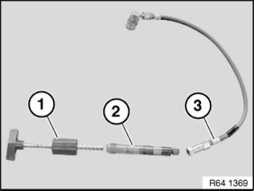
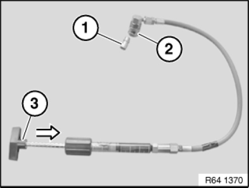
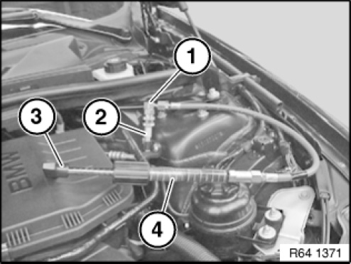
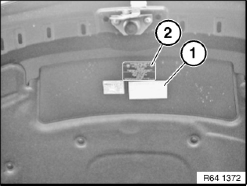

64 50 ... Leak Testing With Ultraviolet Additives (UV Additives) (BMW Leak-Testing Case)
64 50 ... Leak Detection With Ultraviolet Additives (UV Additives) (BMW Leak-Testing Case)

IMPORTANT:
In EU countries, only limited UV leak detection is permitted.
Observe national regulations in all other countries.

IMPORTANT:
It is absolutely essential to read and comply with the equipment manufacturer's operating instructions use provided in the equipment case.
Read and comply with the instructions for use provided with the special tool particularly with regard to accident prevention, health protection and environmental protection.
Use only BMW-approved UV additives (e.g. TRACER).
Only the basic procedure is described in the following.
IMPORTANT:
UV additives may not be used in vehicles with electric A/C compressors.

WARNING:
Avoid contact with refrigerant.
Follow safety precautions when handling refrigerant.
IMPORTANT:
Ultraviolet lamp gets very hot in the radiation area.
Do not use the ultraviolet lamp without the filter glass.
Eyes and skin will suffer damage if the ultraviolet lamp is used without the filter glass.
When using the UV lamp, wear the safety goggles provided in the case.

NOTE:
- Fill the hose system of the hand pump completely with UV additive PRIOR to use
- Use the UV additive exclusively for refrigerant fluid approved by BMW
- Do not operate the air conditioning system while the hand pump is connected or in use
- The air conditioning system must always be filled with an adequate amount of refrigerant to enable the leak-detecting agent to be properly distributed
Necessary preliminary tasks:
Before actually testing for leaks, check the entire refrigerant circuit using the UV leak detection lamp to ensure that no UV additive is already in the area of the refrigerant circuit.
If already illuminated areas are found, carefully clean the area in question with the cleaning agent contained in the case.

On initial use:
Connect hand pump (1) to additive cartridge (2) and hose piece (3).

On initial use:
Attach vent valve (1) to quick-release coupling (2).
Turn handle (3) on hand pump to advance the piston until a small amount of UV additive emerges. This vents the hose system.
IMPORTANT: The entire hand pump with hose system must not be disassembled again once the filling work has been completed.

Attach quick-release coupling (1) to low-pressure connection (2) of air conditioning system.
Turn handle on hand pump (3) until the required amount of UV additive is added.
The quantity of UV additive to be added is dependent on the amount of refrigerant in the refrigerant circuit:
- Air conditioning systems with refrigerant filling up to 900 g: one graduation mark (4) on additive cartridge
- Air conditioning systems with refrigerant filling in excess of 900 g: two graduation marks (4) on additive cartridge
NOTE: After filling, remove quick-release coupling (1) and if necessary use the cleaning agent contained in the special tool case to clean up the UV additive.
Further tasks:
- Start engine
- Run air conditioning system at highest stage for 5 - 10 minutes in order to ensure adequate distribution of dye in the system
- Turn off engine.
- Check all air conditioning system components for possible leaks
- Possible leaks show up in luminous green

Complete accompanying information label (1) with the relevant data and attach in an easily visible position next to the filling capacity information label (2).